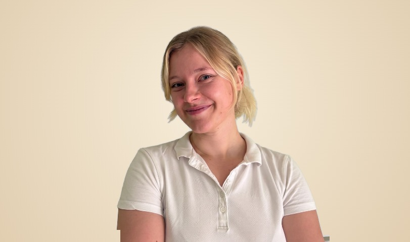

Hanna Wrobel
Physiotherapeutin · Pilatestrainerin
Hanna Wrobel gründete PhysioPro Lübeck nach über 22 Jahren therapeutischer Erfahrung. Ihr Ansatz verbindet klassische Physiotherapie mit modernen Methoden wie Pilates am Reformer – immer mit dem Ziel, nachhaltige Gesundheit zu fördern.
Das Team
Anna
Physiotherapeutin
Staatsexamen Physiotherapie · Manuelle Therapie (zertifiziert) · Lymphdrainage-Ausbildung
„Bei mir fühlen sich Menschen verstanden."
Du bist bei Anna richtig, wenn …
- … du mit akuten oder chronischen Schmerzen zu ihr kommst
- … du jemanden suchst, der wirklich zuhört, bevor er behandelt
- … du nicht nur Symptome lindern, sondern langfristig etwas verändern willst
- … du dich nach der Behandlung aufgeklärt und sicher in deinem Körper fühlen willst

Julia Mielke
Osteopathin · Heilpraktikerin · Physiotherapeutin
Osteopathin – SKOM Hamburg, 1.350 Ausbildungsstunden · Heilpraktikerin · Staatsexamen Physiotherapie
„Ich nehme mir Zeit, wirklich hinzuhören."
Du bist bei Julia richtig, wenn …
- … du die Ursache finden willst, nicht nur das Symptom behandeln
- … du unter Kiefer- oder Kopfschmerzen (CMD) leidest
- … du unter den Folgen von Stress oder Alltagsbelastung leidest
- … du in der Schwangerschaft oder nach der Geburt Unterstützung brauchst
Tuana
Physiotherapeutin · Pilates-Trainerin
Staatsexamen Physiotherapie · Lymphdrainage-Ausbildung · Pilates-Trainer:in
„Bei mir merkt man: Bewegung darf auch Spaß machen."
Du bist bei Tuana richtig, wenn …
- … du unter akuten oder wiederkehrenden Beschwerden leidest
- … du als Sportler:in oder Bewegungseinsteiger:in wieder in Bewegung kommen willst
- … dich Vielsitzen oder Büroalltag ausbremst und du wieder aktiv werden möchtest
- … du dir eine einfühlsame Begleitung wünschst, die dich motiviert und dir ein sicheres, selbstständiges Gefühl gibt
Maike
Physiotherapeutin · Pilatestrainerin
Staatsexamen Physiotherapie · Lymphdrainage-Ausbildung · Krankengymnastik am Gerät
„Ich sehe den Menschen, nicht nur die Diagnose."
Du bist bei Maike richtig, wenn …
- … du als Bewegungseinsteiger:in oder nach langer Pause wieder reinfinden willst
- … du dir jemanden wünschst, der dich mit Humor und Geduld motiviert, statt nur Ansagen zu machen
- … du in der Schwangerschaft oder nach der Geburt Unterstützung suchst
- … du langfristig etwas verändern willst, nicht nur kurzfristig Symptome lindern
Annika
Front Office & Administration
„Bei mir fühlt sich der Patient herzlich willkommen, gut informiert und durch meine ruhige Art und meine fachliche Expertise bestens aufgehoben."
Du bist bei Annika richtig, wenn …
- … du schon am Empfang eine fachlich fundierte Einschätzung willst – nicht nur einen Termin
- … du dich von Anfang an willkommen und gut aufgehoben fühlen möchtest
- … du klare Informationen und Ruhe schätzt, auch wenn in der Praxis viel los ist
- … du dich auf Verlässlichkeit verlassen willst – von der Terminplanung bis zur Rezeptverwaltung
Phillip
Physiotherapeut
Staatsexamen Physiotherapie · Lymphdrainage-Ausbildung
„Ich helfe Menschen, wieder Vertrauen in ihren Körper zu gewinnen."
Du bist bei Phillip richtig, wenn …
- … du nach einer OP oder Reha Schritt für Schritt wieder Sicherheit in deinem Körper finden willst
- … du jemanden suchst, der dir wirklich zuhört, bevor er loslegt
- … du Erklärungen willst, die du wirklich verstehst – statt Fachchinesisch
- … dir Büroalltag oder Stress zusetzen und du wieder in Bewegung kommen willst
Nico
Physiotherapeut · Physiocoach
Staatsexamen Physiotherapie · Lymphdrainage-Ausbildung · Krankengymnastik am Gerät
„Mir geht es um langfristige Verbesserung – nicht nur ums Symptome lindern."
Du bist bei Nico richtig, wenn …
- … du nach einer OP oder Reha wieder gezielt ins Training zurückfinden willst
- … du als Sportler:in oder Bewegungseinsteiger:in strukturiert trainieren möchtest
- … dich Vielsitzen oder Büroalltag ausbremst und du raus aus der Bewegungsarmut willst
- … du dir einen motivierenden Coach wünschst, der dich ernst nimmt und langfristig statt nur kurzfristig begleitet
Imo
Physiotherapeutin
Staatsexamen Physiotherapie · Lymphdrainage-Ausbildung · Fasziendistorsionsmodell nach Typaldos · CMD
„Ich möchte Menschen dabei helfen, wieder selbstständig in Bewegung zu kommen.“
Du bist bei Imo richtig, wenn …
- … du unter akuten oder chronischen Schmerzen leidest
- … du unter Kiefer- oder Kopfschmerzen (CMD) leidest
- … du nach einer OP oder Reha wieder Sicherheit in deinem Körper finden willst
- … du dir eine empathische Begleiterin wünschst, die dir Dinge verständlich erklärt

Mascha
Physiotherapeutin
Staatsexamen Physiotherapie
„Bei mir bist du in guten Händen – und darfst dabei auch mal lachen.“
Du bist bei Mascha richtig, wenn …
- … du mit akuten, chronischen oder wiederkehrenden Beschwerden zu ihr kommst
- … du dich nach einer Operation in kleinen, sicheren Schritten zurücktasten möchtest
- … du dir eine ruhige und humorvolle Begleitung wünschst, bei der du dich ernst genommen fühlst
- … du im Büroalltag oder als Sportler:in wieder mehr Beweglichkeit und Sicherheit gewinnen willst
Dini
Physiotherapeutin · Sport & Bewegung
Staatsexamen Physiotherapie · Manuelle Therapie (zertifiziert) · CMD/KGG-Fortbildungen
„Ich höre zu, sehe den Menschen im Ganzen und arbeite so mit ihm zusammen, dass er sich wirklich verstanden fühlt.“
Du bist bei Dini richtig, wenn …
- … du als Sportler:in strukturiert und gezielt trainieren möchtest
- … dich Verspannungen im Kiefer oder wiederkehrende Kopfschmerzen belasten
- … du eine Therapeutin suchst, die analytisch nach der Ursache sucht und dich dabei ganzheitlich im Blick behält
- … du sowohl Manuelle Therapie als auch aktives Training in einer Behandlung verbinden möchtest
Werde Teil unseres Teams
Wir suchen engagierte Physiotherapeut:innen, die mit uns wachsen möchten.
Offene Stellen ansehen →